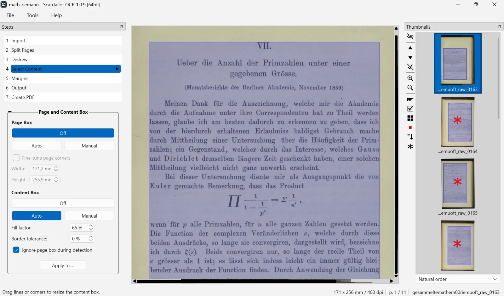

Turn scans into searchable PDFs.
ScanTailor OCR cleans up scanned pages, recognizes the text and saves everything as a compact PDF that you can search and copy text from.
For Windows and Linux · in English and German

Everything a scan needs
From a skewed book page to the finished PDF in one program – no subscription, no cloud.
-
Built-in PDF export
Lossless JBIG2 for black and white pages, text over a small JPEG picture for mixed pages. The result stays compact.
-
Text recognition with Tesseract
An invisible text layer makes the PDF searchable. More languages can be downloaded right in the program.
-
Clean up every page
Split facing pages, deskew, straighten curved lines, detect the content and set even margins.
-
Watched folder
New scans are added to the project automatically as soon as they appear in the chosen folder.
-
Photo adjustments
Exposure, contrast, highlights and shadows for picture pages, plus automatic detection of the color mode.
-
More filters and methods
Even out the background, denoise, sharpen, and five more binarization methods for difficult originals.
From scan to PDF in four steps
Every step shows a preview right away. Where the automatic detection misses, you correct it with the mouse.
-
Load scans
Open images from a folder or pick up new scans automatically.
-
Crop and align
Rotate, split and deskew pages, and set the content area.
-
Set up the output
Choose black and white, grayscale or color, add filters, even out the margins.
-
Create PDF
Recognize the text and save everything as a searchable PDF.
Download now
Ready to run, no installation needed on Windows
-
Windows
Portable ZIP, 64-bit
Download ZIP -
Linux · Debian/Ubuntu
.deb package
Download .deb -
Linux · AppImage
Runs on most distributions
Download AppImage
Open to everyone
ScanTailor OCR is licensed under the GNU GPLv3 and builds on ScanTailor Advanced, with features adopted from ScanTailor Experimental and ScanTailor Spectre. Every change can be traced in the source code.